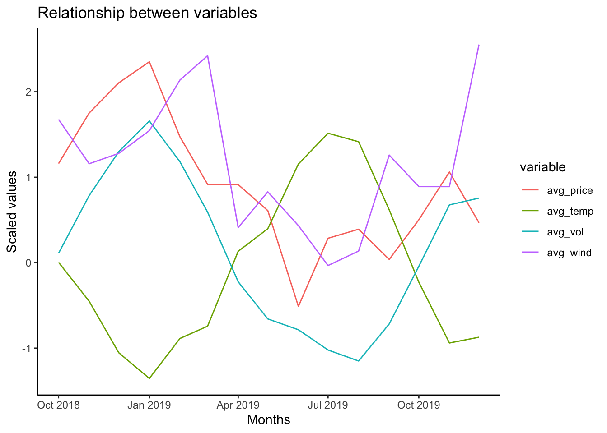
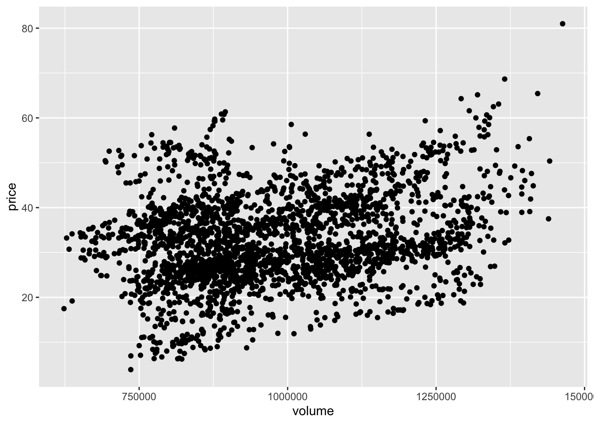

# Create a data frame of monthly averages of the variables volume, price,
# temperature and wind_production in long format.
df_avg_long <-
df %>%
# Select the specified variables
select(date, volume, temperature, price, wind_production) %>%
# Calculate monthly averages for each variable
mutate(year_month = floor_date(date, "month")) %>%
group_by(year_month) %>%
summarise(
avg_vol = mean(volume, na.rm = TRUE),
avg_temp = mean(temperature, na.rm = TRUE),
avg_price = mean(price, na.rm = TRUE),
avg_wind = mean(wind_production, na.rm = TRUE)
) %>%
# Scale the values
mutate(
avg_vol = scale(avg_vol),
avg_wind = scale(avg_wind),
avg_temp = scale(avg_temp),
avg_price = scale(avg_price)
) %>%
# Pivot to long format
pivot_longer(
cols = -year_month,
names_to = "variable",
values_to = "scaled values"
)Assignment 2
Assignment 2
Task A. Plotting monthly averages of temparature, volume, price and wind production.
We looked at the relationships between temperature, volume, price, and wind power production. These variables have different scales, so we scaled their monthly averages to compare them better. We focused on the last year of the sample to keep the plot easy to read.
# Plot the specified variables
df_avg_long %>%
arrange(year_month) %>%
tail(60) %>%
ggplot(
aes(
x = year_month,
y = `scaled values`,
col = variable
)
) +
geom_line() +
labs(
title = "Relationship between variables",
x = "Months",
y = "Scaled values"
) +
theme_classic()
Upon examining the provided plot, a few notable patterns and relationships emerge. Firstly, we notice a strong inverse relationship between average temperature and volume. As the temperature dips, notably around January and then again toward the end of the year, there’s a noticeable rise in volume, suggesting that colder months might drive up the demand for energy. This is reinforced by the trend of wind power production. Wind production seems to rise during periods of colder temperatures, which could indicate that colder months are, in general, windier.
In terms of pricing, there’s a clear spike around April. This might be influenced by multiple factors, but its correlation with the other variables at that specific time is less direct. While volume and temperature show a consistent inverse relationship, the relationship between price and other variables is less linear, suggesting that other external factors might play a role in influencing the price.
The relationships highlighted here offer valuable insights, but a deeper analysis of the data and potential external influences will likely provide a more comprehensive understanding.
Task B. Why will a OLS regression on quantity not provide an estimate of demand?
Using an OLS regression on quantity with price as the only predictor isn’t good enough to accurately estimate demand, even with added controls. There’s a problem with endogeneity because price and quantity in markets are decided at the same time. Also, important variables like consumer income, advertising, and seasonality might be left out, which can introduce bias. Mistakes in measuring price or quantity can also affect the accuracy of our results. The OLS method assumes a straight line relationship between variables, but if the demand curves aren’t straight lines, this becomes an issue. Another concern is heteroskedasticity, where the variability of the error changes with different price levels, affecting the reliability of standard errors. The changing behavior of demand and its seasonality might not be fully captured by OLS. To get a more detailed and accurate picture of demand, methods like instrumental variable regression are often better. Improving data quality and including controls for relevant factors can also make our estimates more precise.
Task C. Considering choice of instrument for price when estimating demand
When picking an instrument for price in estimating demand, the instrument’s validity is crucial. Valid instruments should be relevant, exogenous (not linked to unobserved factors), and shouldn’t directly affect the dependent variable.
Is temperature a valid instrument for price in estimating demand?
Using temperature as an instrument for price could be problematic. Temperature often changes with factors that can also influence demand, like the time of year or consumer habits. If temperature is connected with unseen demand shifts, it’s not a valid choice because of these links.
Could magazine levels and wind power production be good price instruments when estimating demand?
Both magazine levels and wind power production might be effective instruments for price. They need to influence the price and remain exogenous, meaning they shouldn’t be linked with unseen factors affecting demand. It’s essential to carefully assess their exogeneity by testing if they’re associated with other unobserved variables.
Why do we need to adjust for seasonality and temperature?
Adjusting for the time of year and temperature ensures our demand estimates are more accurate. The time of year can cause regular shifts in demand not related to price, while temperature can change demand directly. By adjusting for these, we’re making sure other factors aren’t distorting our demand estimates.
How can adjusting for weekday and year help?
Including weekday and year adjustments can account for different demand patterns. For instance, demand might differ on weekdays compared to weekends. Adjusting for year can capture larger trends or bigger economic impacts on demand. By including these adjustments, we get a clearer picture of demand that’s not clouded by these other factors.
Task D. Providing a table of regression results
Using the provided equations, we conducted several regression analyses. To enhance clarity, we rescaled some of the data, particularly dividing volume and wind power production by 1,000. We also added variables to our dataset indicating the year, month, and weekday for each observation.
We chose to present a table of all regression result, but for enhanced clarity we omitted dummies for year, month and day i all regressions, and the regression statistics as they will not be of value to the following discussion.
# Create new variables in data frame containing the dummies for
# year, month and day in which the observation is made and scale variables.
df_new <-
df %>%
mutate(
volume = volume / 1000,
wind_production = wind_production / 1000,
year = as.factor(year(date)),
month = as.factor(month(date)),
weekday = as.factor(wday(date,
label = FALSE,
week_start = 1))
)# Perform specified regressions
# First stage
first_stage <- lm(
price ~ magazine_level + temperature + wind_production + year + month + weekday,
data = df_new
)
# Reduced form
reduced_form <- lm(
volume ~ magazine_level + temperature + wind_production + year + month + weekday,
data = df_new
)
# IV/2SLS
iv_model <- ivreg(
volume ~ price + temperature + year + month + weekday
| magazine_level + temperature + wind_production + year + month + weekday,
data = df_new
)
# OLS
ols_model <- lm(
volume ~ price + temperature + year + month + weekday,
data = df_new
)# Regression table of all regression.
# Omitting statistics to make the table more readable.
# Note! Scaling of variables 'volume' and 'wind_production' of 10^-3, and
# that all dummies is omitted from the regression table.
stargazer(
title = "Table including all regressions",
first_stage,
reduced_form,
iv_model,
ols_model,
type = "text",
omit = c("year", "month", "weekday"),
omit.table.layout = "sn",
dep.var.caption = "First stage (1) | Reduced form (2) | IV/2SLS (3) |OLS (4)"
)
Table including all regressions
============================================================================
First stage (1) | Reduced form (2) | IV/2SLS (3) |OLS (4)
------------------------------------------------------------
price volume
OLS OLS instrumental OLS
variable
(1) (2) (3) (4)
----------------------------------------------------------------------------
magazine_level -0.380*** 1.282***
(0.022) (0.162)
price 1.831*** 1.173***
(0.364) (0.146)
temperature -0.321*** -12.755*** -12.036*** -12.341***
(0.036) (0.270) (0.331) (0.292)
wind_production -0.035*** -0.356***
(0.002) (0.019)
Constant 63.158*** 1,062.206*** 1,037.639*** 1,064.506***
(1.287) (9.653) (15.479) (7.300)
============================================================================
============================================================================With basis in the results above, we will take a closer look at the OLS and IV/2SLS regressions, provide a short description of their purpose and our findings, and a comparison of the two models.
OLS regression
The Ordinary Least Squares (OLS) regression serves as our benchmark to determine the level of bias introduced by endogeneity. Endogeneity, which arises when an independent variable correlates with the error term, can skew results, leading to biased or unreliable estimates.
For the OLS regression, coefficients for price and temperature are 1.173 and -12.341 respectively. The accompanying error terms are small and positive, suggesting that our model fits the data well for the variables chosen.
IV/2SLS regression
The Instrumental Variable/Two-Stage Least Squares (IV/2SLS) regression aims to estimate the demand for electricity in the power market while accounting for endogeneity. The model’s foundation lies in the first stage and reduced form regressions.
In the IV/2SLS model, with volume as the dependent variable, both price and temperature coefficients are statistically significant at the 1% level. Their values are 1.831 and -12.036 respectively. Interestingly, an increase in price corresponds to an increase in volume, a trend that might be influenced by limited supply during peak demand months due to magazine levels.
Comparison of the two models
When comparing the IV/2SLS model to the OLS benchmark, there are slight variations in the coefficients. For instance, the price coefficient in IV/2SLS is 1.831, while in OLS it’s 1.173. Bigger price changes could highlight these differences even more, showing the importance of using both models in various situations.
While the OLS model provides a good starting point, the IV/2SLS model offers deeper insights by addressing potential endogeneity concerns. The observed differences in the coefficients between the two models highlight the importance of considering both techniques, especially in an economic context where even small variations can have large implications.
Task E. Commenting on the first stage regression
The first stage regression is designed to address endogeneity by identifying instrumental variables that are correlated to the endogenous variable but is uncorrelated with the error term. This process helps to ensure consistent and unbiased parameter estimates.
In this stage, we examine the relationship between several instruments, namely magazine levels, temperature, and wind production, and the variable we aim to instrument, which is the electricity price.
# Regression table for first stage, including stats
stargazer(
title = "First stage",
first_stage,
type = "text",
omit = c("year", "month", "weekday")
)
First stage
===============================================
Dependent variable:
---------------------------
price
-----------------------------------------------
magazine_level -0.380***
(0.022)
temperature -0.321***
(0.036)
wind_production -0.035***
(0.002)
Constant 63.158***
(1.287)
-----------------------------------------------
Observations 2,556
R2 0.717
Adjusted R2 0.714
Residual Std. Error 5.285 (df = 2529)
F Statistic 246.224*** (df = 26; 2529)
===============================================
Note: *p<0.1; **p<0.05; ***p<0.01The coefficients associated with magazine levels, temperatures, and wind production are -0.380, -0.321, and -0.035 respectively. All of these coefficients are negative and statistically significant at the 1% level. This suggests that as these variables increase, the price of electricity (the dependent variable) tends to decrease. Additionally, the error terms for these coefficients are small and positive.
The negative relationship between magazine levels and price introduced above is intuitive: when magazine levels are high, it typically indicates a supply of electricity greater than the demand. Furthermore, during colder months, inflows to the magazines are reduced, which can lead to higher electricity prices due to diminished supply.
Similarly, it is logical for the electricity price to decrease with rising temperatures, as warmer conditions reduce the need for heating in homes and buildings. This inverse relationship is evident in the plot (see task A), which shows the average volume (depicted in blue) and average temperature (shown in green) displaying opposite trends across months.
Lastly, wind production, which can vary seasonally and often peaks during winter months, exhibits a mild correlation with magazine levels, a trend also visible in the plot (task A). The influence of these instruments on the price of electricity aligns well with economic reasoning.
Task F. Commenting on the reduced form
We substituted the endogenous variable, electricity demand at time t, with the instruments in our reduced form regression. This regression took volume as the dependent variable, using magazine level, temperature, and wind production as the independent variables.
# Regression table for reduced form, including stats
stargazer(
title = "Reduced form",
reduced_form,
type = "text",
omit = c("year", "month", "weekday")
)
Reduced form
================================================
Dependent variable:
----------------------------
volume
------------------------------------------------
magazine_level 1.282***
(0.162)
temperature -12.755***
(0.270)
wind_production -0.356***
(0.019)
Constant 1,062.206***
(9.653)
------------------------------------------------
Observations 2,556
R2 0.944
Adjusted R2 0.943
Residual Std. Error 39.648 (df = 2529)
F Statistic 1,627.381*** (df = 26; 2529)
================================================
Note: *p<0.1; **p<0.05; ***p<0.01In the table of regression results all coefficients were significant at the 1% level, and error terms were consistently small and positive. We noticed a very high goodness-of-fit at 94.4%. Despite this result indicating that out model fit the data really well, such a high goodness-of-fit raises suspicion of potential data loss or other errors in the estimation.
F-statistic was statistically significant 1% level giving a value of 1627.381 which is very high. This implies that the variables included in the model are jointly statistically significant on the on demanded quantity.
Lastly, we investigated whether the coefficients from the first stage and the reduced form were as we expected based on the discussion earlier about instrument validity (see task C for clarity). We observed a simultaneity endogeneity issue. Price and volume can influence each other, questioning the validity of the instruments. For instance, a price increase due to electricity market changes would reduce consumption. Conversely, changes in volume can affect the price.
Task G. Application of the IV/2SLS estimates
Applying our estimates of the coefficient for price in our IV/2SLS regression (the structural form) of 1.831, a permanent increase in electricity prices of 10 EUR / MWh would suggest an increase in the dependent value, volume, og 18.831 units. Remember that before performing the regression, we divided the ‘volume’ variable by 1,000, thus one unit of the variable volume is 1,000 MWh . Therefore, we can conclude with a basis in our estimates that a permanent increase in electricity prices of 10 EUR / MWh we expect the volume to increase by 1,831 MWh.
Our results is rather surprising. Standard economic theory suggests that an increase in prices usually reduces the demand. However, the source of this surprising result is the problems of endogeneity as discussed earlier. As we are trying to determine the effect of price on volume, we didn’t include the other explanatory variables magazine level and wind production that is correlated with both price and volume, thus resulting in a biased regression coefficient for price.
df %>%
ggplot(aes(x = volume, y = price)) +
geom_point()
reg1 <- lm(volume~price +magazine_level + temperature + wind_production + year + month + weekday, data = df_new)
stargazer(reg1, type = "text", omit = c("year", "month", "week"))
================================================
Dependent variable:
----------------------------
volume
------------------------------------------------
price 1.047***
(0.148)
magazine_level 1.680***
(0.170)
temperature -12.419***
(0.271)
wind_production -0.320***
(0.019)
Constant 996.107***
(13.360)
------------------------------------------------
Observations 2,556
R2 0.945
Adjusted R2 0.944
Residual Std. Error 39.268 (df = 2528)
F Statistic 1,599.442*** (df = 27; 2528)
================================================
Note: *p<0.1; **p<0.05; ***p<0.01